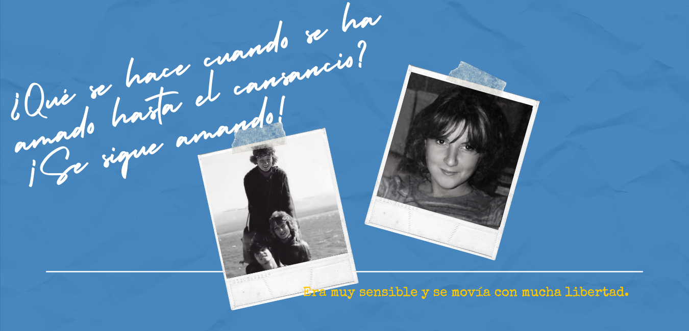

Nel 1976 Cecilia ha cominciato a frequentare all’Università “Nacional del Sur”, la facoltà di Biochimica e l’anno dopo ha chiesto di poter passare alle Scienze Umanistiche con la specializzazione in Storia. È stato così come si è allontanata dalle istituzione di educazione religiosa dove aveva trascorso le prime tappe della sua istruzione scolastica, ingressando in un università laica che stava attraversando momenti turbolenti.
Inoltre a quel tempo ha lavorato come insegnante all’Istituto Canossiano, impiego che ha lasciato nel 1981 per trasferirsi al Collegio Estrada, dove oltre a fare la bibliotecaria, faceva lezioni di catechesi a 5 gruppi delle medie e superiori.
In tutte queste attività accademiche e lavorative, ha fatto impatto la convulsionata vita politica argentina di quel tempo. In quello scenario Cecilia ha costruito grandi amicizie ed anche ha dato testimonianza pratica della sua fede.
Spiccava per la sua umiltà e semplicità. Era una delle professoresse più giovani, le piaceva vestirsi bene, essere alla moda, di solito portava due sciarpe intrecciate che le davano un tocco di armonia e modernità.
Tutta la sua giovinezza è risultata una specie di allenamento in quell’Ideale dove aveva scoperto Dio Amore. Per lei non esistevano i rapporti superficiali. Con la sua donazione e generosità riusciva ad andare oltre le differenze e coprire tutto con l’amore. Sapeva ascoltare dal più profondo del suo essere ed agiva di conseguenza. Ciò la rendeva libera nel muoversi. Aveva capito che l’amore non era soltanto un sentimento, ma fatti concreti cercando che chi aveva accanto fosse felice. Una frase con la quale si identificava particolarmente in quel tempo era:
“¿Qué es lo que se hace cuando se ha amado hasta el cansancio? ¡Se sigue amando!”
Uno dei suoi allievi, che poi abracciò il sacerdozio, successivamente ha descritto le sue lezioni di catechesi aggiornate ai tempi nuovi che viveva la Chiesa e la società, perchè in esse sviluppava temi di formazione ma anche si adattava ai bisogni particolari dei giovani. Inoltre questo sacerdote ha riconosciuto l’ascendente che lei come insegnante, ha avuto nella sua decisione di ricevere il Sacramanto della Cresima. In diversi scritti di quell’epoca allieve ed allievi sottolineavano l’amore, la generosità, dedizione e donazione di questa giovane professoressa, le esprimevano la loro gratitudine ed affermavano che si trattava di un modello degno d’essere imitato.
La fede di Cecilia è cresciuta durante quegli anni in seno ai gruppi Gen (branca giovanile del Movimento dei Focolari). In quei gruppi prevaleva l’accompagnamento permanente, la lettura della Parola di Dio e l’aggiornamento delle notizie e mesaggi di Chiara Lubich. I partecipapanti si incoraggiavano ed aiutavano a “ricominciare” quando c’era bisogno, ciò significava tornare ad abbracciare la volontà di Dio nella vita quotidiana, in uno sforzo per camminare insieme verso la santità in modo collettivo e comunitario, proprio come è concepito nel Carisma di quest’Opera.
“... Marita una focolarina, mi racconta: Dopo il’75 e fino all’85/86 vivevo nella Capitale e viaggiavo a Punta Alta ed a Bahía Blanca. È stato allora quando ho conosciuto Ceci. Sempre mi alloggiavo a casa sua. In genere viaggiavo il venerdì notte, arrivavo il sabato mattina e rimanevo fino la domenica sera.
Era una di quelle famiglie che ti facevano sentire “sicura”. Mi sentivo come a casa mia. L’impressione che ho di Ceci è di una persona molto armoniosa nella sua vita, ricordo che arrivavo presto e lei andava a prendermi alla stazione, andavamo in un bar a prendere qualcosa e lei si occupava di darmi le notizie più importanti della vita della comunità di Punta Alta. Mi impressionava la sua maturità, una specie di gesto di maternità, nonostante la sua gioventù. Era molto responsabile. Aveva una grande capacità per vedere tutti i dettagli, per preparare dove si sarebbe svolta ogni cosa, per ottenere il collegio per l’incontro.
Era molto sensibile e si muoveva con tanta libertà. Ti direi che sapeva ascoltare ciò che le diceva la sua coscienza dal più profondo di sè, allora lei si muoveva con questo parametro, non dall’esterno” (frammento del libro “Tus caminos son una locura” di Licy Miranda, Editoriale Ciudad Nueva))
Cecilia era stata fidanzata durante l’adolescenza con Luis Alberto Buide. Nonostante non continuarono questo rapporto, si sono mantenuti sempre in contatto pure se lui si è trasferito a Buenos Aires per studiare. Ritornato dalla Capitale per stabilirsi a Punta Alta, ricominciarono a vedersi e formalizzarono il loro fidanzamento, durato due anni. Passato questo tempo, si sposarono il 20 maggio 1983, formando una famiglia dove l’amore era alla base di ogni rapporto.